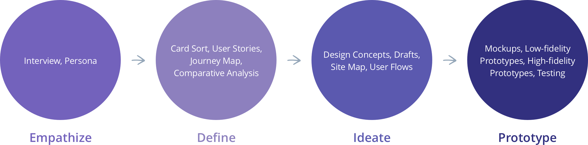
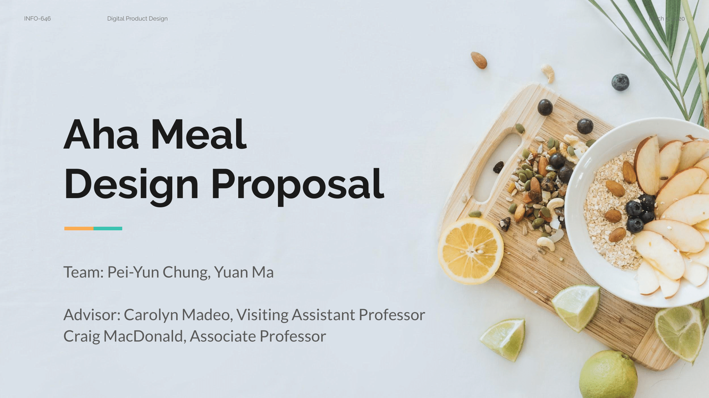
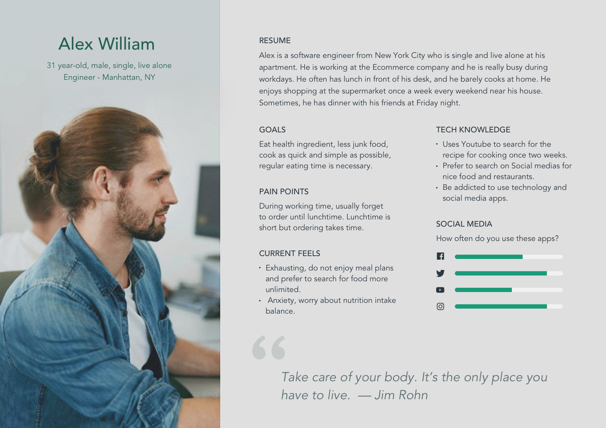
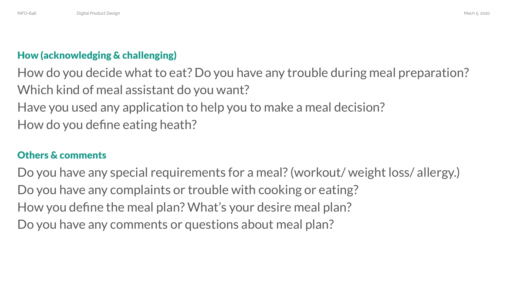
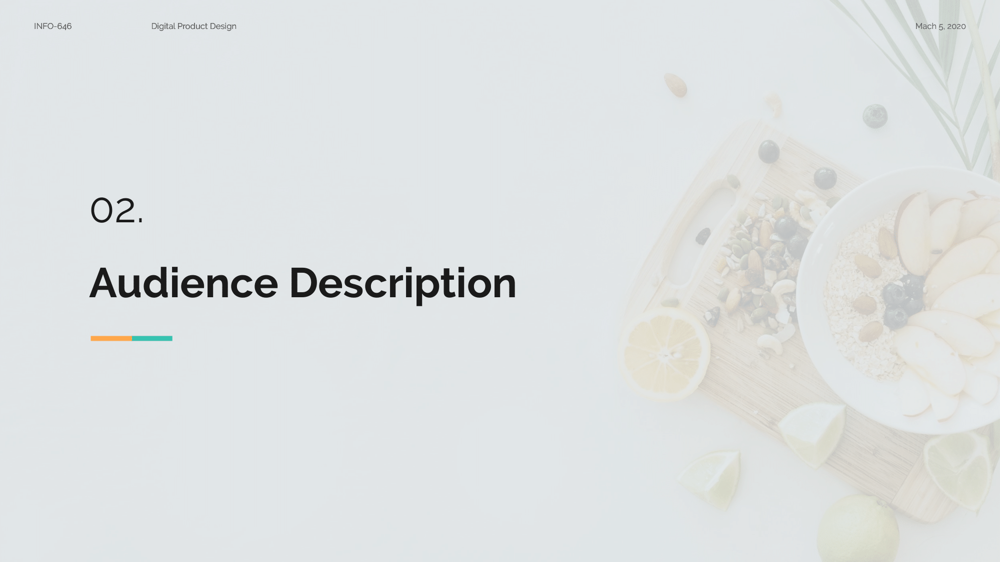
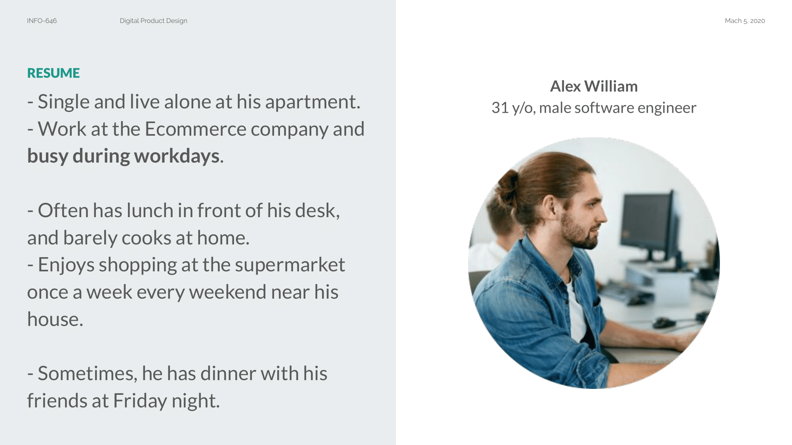
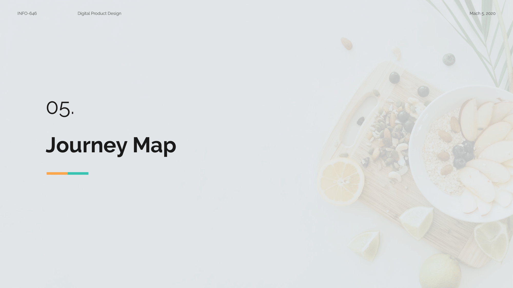
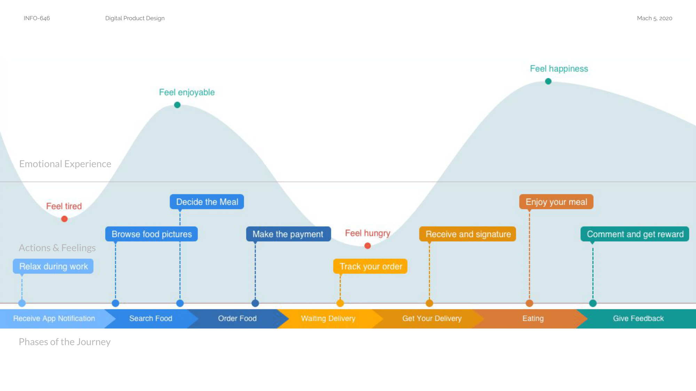
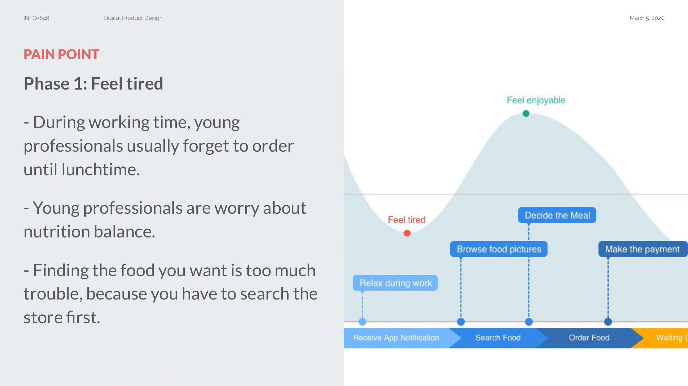
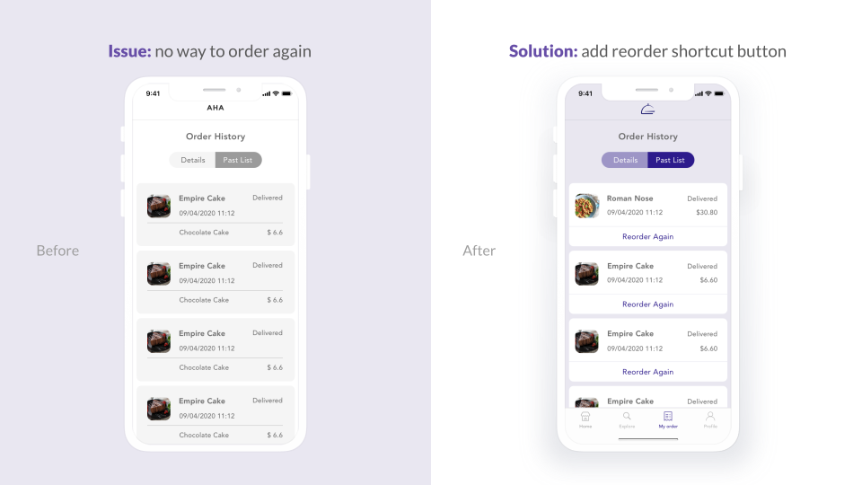

OVERVIEW
Aha Meal App is a food delivery service for office workers. Our principles are Enjoyable, Efficient, and Understandable. We provide customers relaxing order process, on-time delivery, and readable health tracking.
OBJECTIVE
Mobile applications, visual design, concept planning
ITEM
Graduate team project
IN CHARGE
Research, Product Design, Slides Design
PERIOD
Feb 2020 - May 2020
DESIGN PROCESS
DISCOVER THE NEED
We created some questions that we plan on asking, and used this research script to conduct our interview on the target audiences. Here is the outline overveiw.
- Audience: Young professionals who have a full-time job and care about health.
- How you will contact them? Find volunteers through social media groups or in neighborhood communities randomly.
- Who you are? How do single professionals deal with everyday meals currently?
Questions we plan on asking
PERSONA
We created this persona for Aha Meal Application with a specific target user. For example, bachelors, single, or unwed women. The persona is a representation of our real target audience data and also helps us to gather in previous research such as user interviews.
RESEARCH RESULTS
Based on the context of the interviews, we used the card sorting to category and converge users' needs and expectations. Therefore, we concluded the findings into our design principles: Enjoyable, Efficient, and Understandable.
Save time
- As quick and simple as possible
- No time for cooking
- Takeout is a common choice
- Regular eating time is necessary
- About half of them eat alone
Enjoyable experience
- Feel relax and happiness
- Not anxious or feel limited
- Enjoyable shopping process
- No specific for daily plan
Healthy food choice
- American eat too much oil and calories
- Healthy ingredient
- Less junk food
- Eat balance and nutrition
- Less sugar and salt
USER STORIES (JTBD)
We referred the Jobs-to-be-done workflow to explore the context in which a user would use this system and understand their motivation and desired outcome. We wrote down the following job story based on interviews with our target users:
JOURNEY MAP
This journey map depicts how users go through the Aha Meal application, from search food, order, get the delivery, and give feedback. I designed a visualization to present the experience of the interaction with the product. In this diagram, users' emotional experiences followed up and down their actions and feelings through each phase of the journey.
Pain points: feel tired
- During working time, young professionals usually forget to order until lunchtime.
- Young professionals are worry about nutrition intake balance.
- Finding the food you want is too much trouble, because you have to search the store first.
Pain points: feel hungry
- Waiting is irritating, users want to know the food delivery process.
- During workdays, lunchtime is short but ordering takes time.
Aha moments: feel enjoyable
- Search for food instead of store and feel the relax of browsing social media.
- Users found that they maintained a good diet balance.
Aha moments: feel happiness
- They can receive food immediately when they have time to eat or feel hungry.
- Get rewarded with reviews and even get a free lunch.
COMPARATIVE ANALYSIS
We research similar applications regarding food delivery in the current marketing and narrow down the result to the top six high ranking and recommendations on Apple iTunes Store: Freshly, Sweetgreen, Blue Apron, HelloFresh, Grubhub, Zomato. Then, we classify five properties below, which have a crucial impact on our product. In this process, we rethink the design of our product through observation of those user interfaces.
Competive indexes
- Login/ Create Account
- Home Page
- Navigation
- Search/ Filters
- Appearance
Selected competitors
Login/ Create account
- Present appealing pictures
- Register with social media (Facebook, Google)
- Skipped to homepage and login from profile
Home page
- High-quality pictures of food
- Keep clarity and simplicity layout
- Today recommendation


Navigation
- Understandable instruction
- Clear ranking and feedback
- Simple icons and clear wordings
Search/ Filters
- Clear sort definition and layout
- Visualized rang selection
- Understandable criterias

Appearance
- Aesthetic photography of cuisines
- Keep clarity and simplicity layout
- Have a clear hierarchy
- Seamless browsing process
- Fluently and user-friendly interaction

DESIGN CONCEPTS PROPOSAL
Product’s goal: Let users can…
- Eat on regular schedule
- Enjoy the food browsing process
- Have good nutrition balance
Uniquely point
- Give user aha moment during meal searching
- Can solve the Time Issue effectively
- Interesting and understandable health tracking
Why do people need your product?
- Workers require an easy and relaxing way to search for the food, rather than have to find a restaurant first.
- Workers need to receive delivery on time, because they only have a short meal time.
- People need an undesirable nutritional status, rather than complex statistics of calories, carbs, fat, or protein.
Branding
- Target user: busy office worker
- Slogan: Less wait. More joy.
Design principle
- Enjoyable: relaxing order process
- Efficient: on-time delivery
- Understandable: readable health tracking
IDEATING THE SOLUTION
Then it was time to start sketching. We decided to focus on our main features with several potential solutions and made some rough drafts. And we used the feedback to refine our sketches and narrow down the scope of our product for the high-fidelity mockups.
FINAL DESIGN
We decide to create the visual elements on our product's branding. We design the logo to convey our design principles of Aha Meal App. Then, I simplify the logo design into the final version.
Based on our competitive research, we found out that most apps chose the greenish and reddish color as their identity color. Therefore, we decided to jump out of the frame and make our color outstanding to the current marketing. We pick up the purple color as the primary color and its contrast color, yellow, as the secondary color. To ensure the color is readable in the user interfaces, we use Google Color Tool to measure the accessibility level of our color combination. Also, we pick the lighter and darker color from the palette of the suggestion.
USER FLOW
We designed a user flow to show the features and the process for a user who accurately completes the order on the Aha Meal app. We follow this user flow to create the prototypes of our product that we conduct simple testing on users.
TEST & FEEDBACK
Issue 1: Users suffer from confused landing pages
Design solution: add a three-page introduction on the landing page with a one-sentence description. Users can also set up their preferences in this process step by step.

Issue 2: Users have no way to order again
Design solution: add reordering shortcut button on the order history. Users can quickly add the same meal to the cart and get the food delivery without going through the order process again.
Issue 3: Misunderstandable nutrition information
Design solution: create a new page to offer the nutrition report clearly rather than show the nutrition information on the detail page when users order food, which confused them to make an order decision.

PROTOTYPING AND VALIDATION
I created this interactive prototypes with InVision. We present the final design solutions with three user flows: main flow, review flow, and nutrition flow.